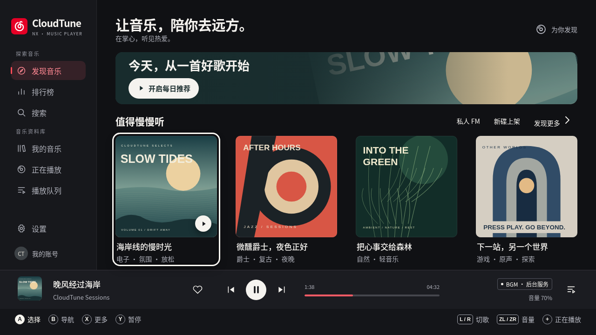
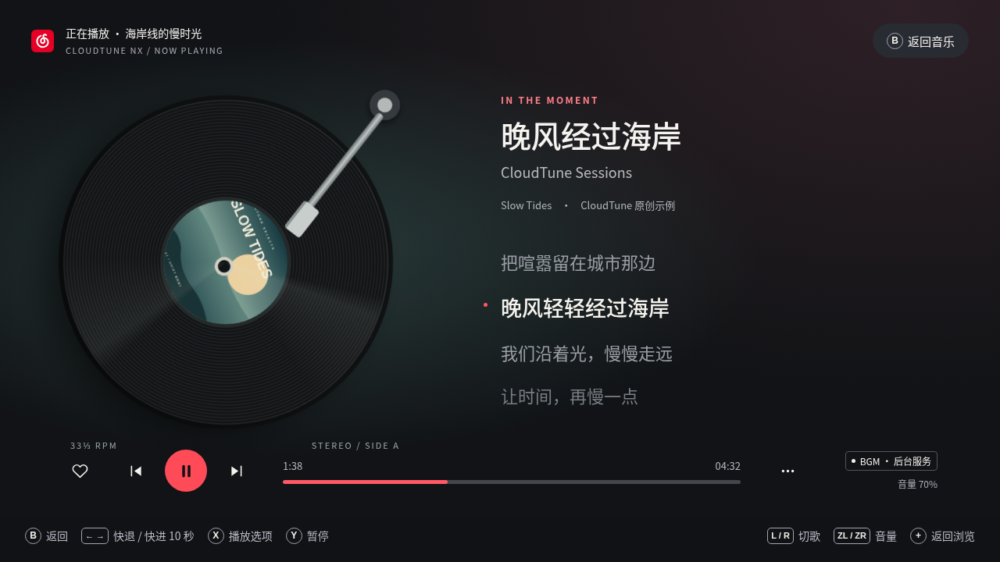
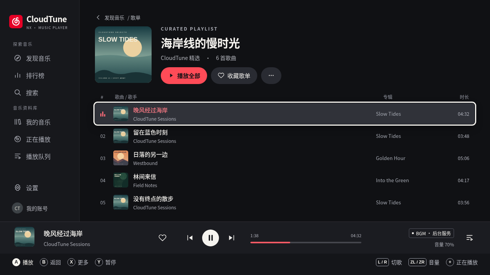
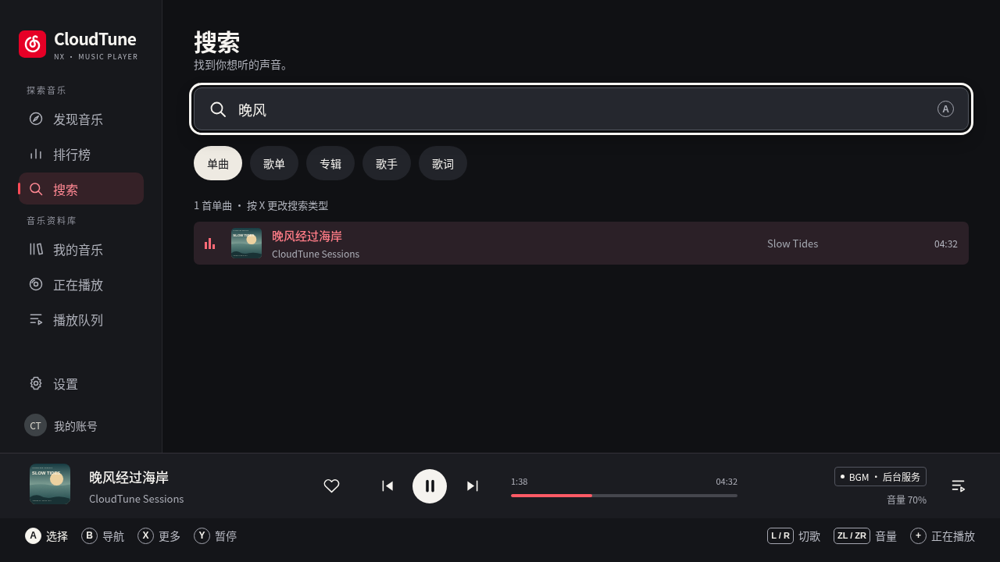
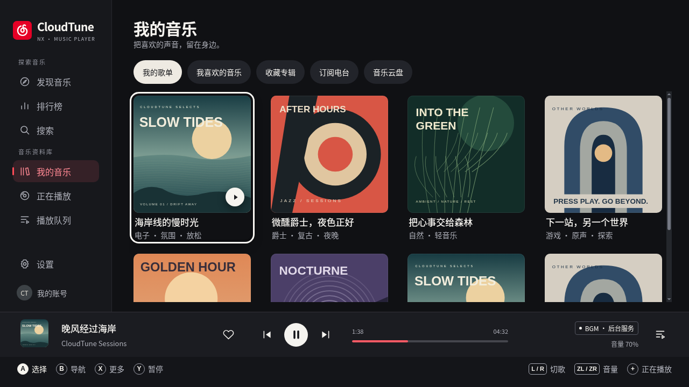
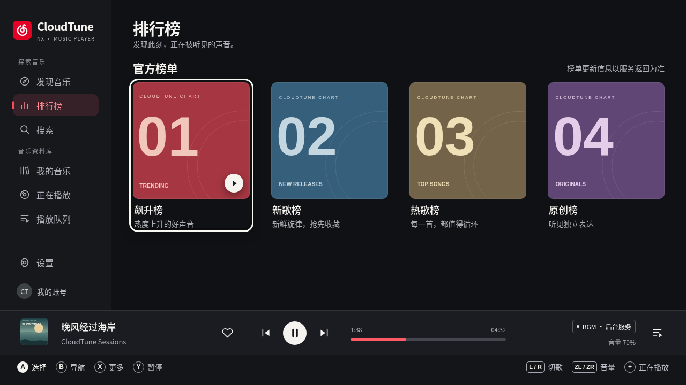
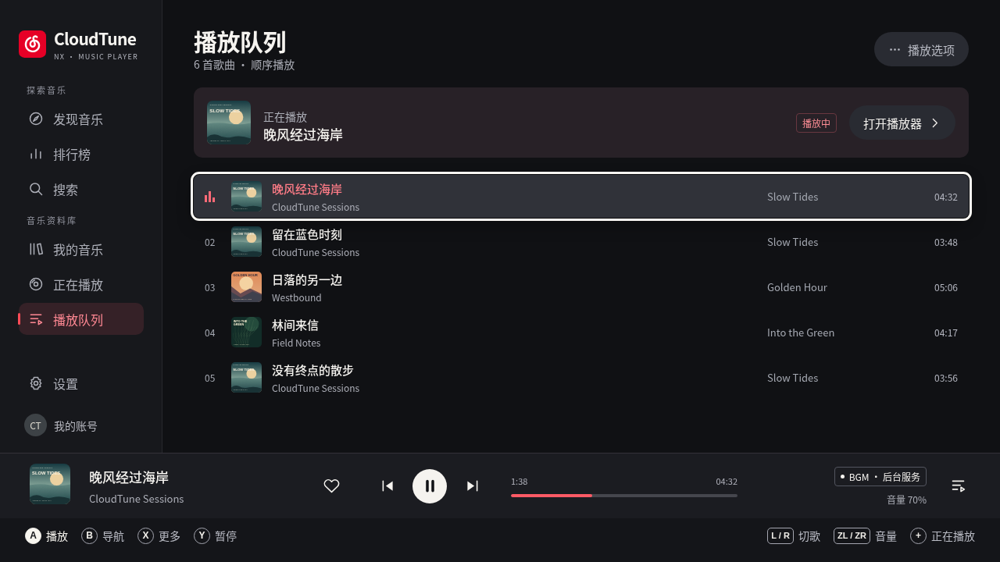
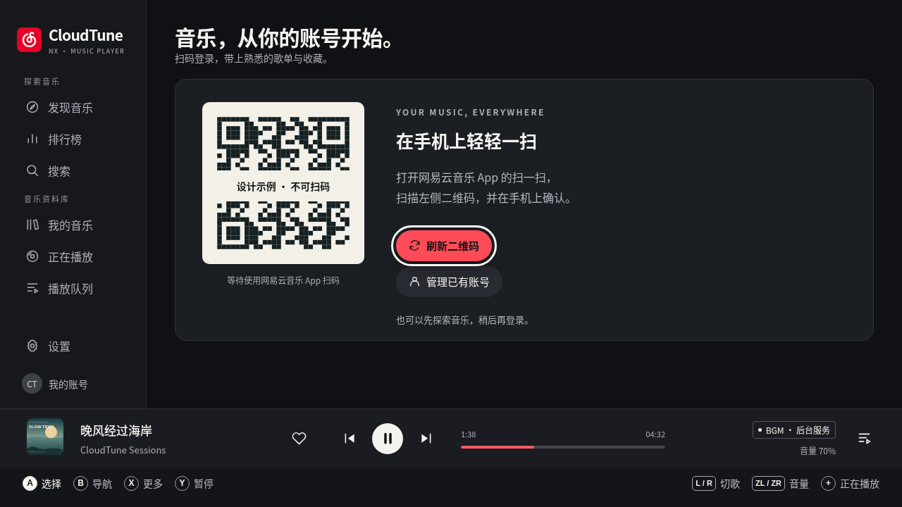
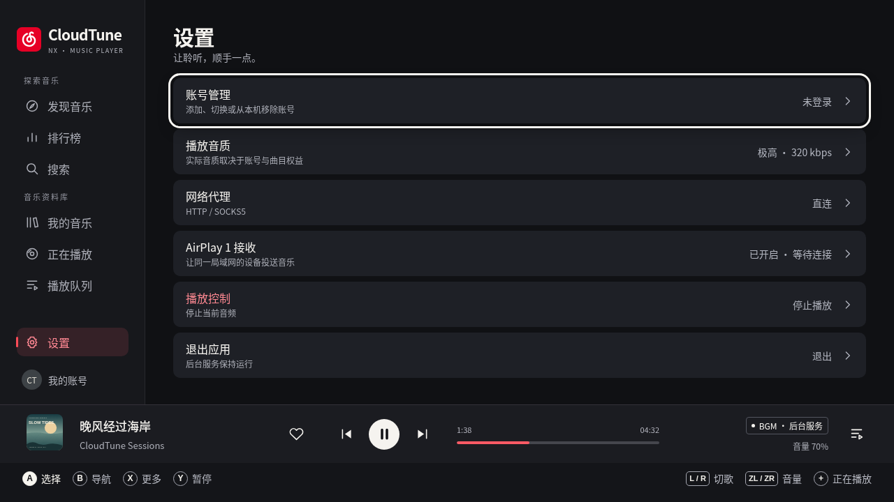

01 / 先理解现有项目
分析基于 Git a254e5c、现有 UI / Model / Player 接口、Borealis 缩放代码及仓库的两个桌面客户端截图。当前工作区起始无未提交修改。
| 现状与证据 | 设计判断 |
|---|---|
MusicView 是单一 brls::View，自行用 NanoVG 绘制并关闭整画布高亮；src/ui.cpp:95–205。 | 保持画布与输入架构。通过 UI 内部元素 ID 管理焦点，避免给整张画布加轮廓。 |
8 个顶层 Page、4×2 网格、6 行列表；ui.cpp:259–318, 818–905。顶部快捷按钮有触摸命中，方向导航主要在侧栏与列表之间。 | 保持功能可达性，补齐快捷入口、分类和播放栏的手柄焦点。视图状态与播放状态分开。 |
逻辑坐标 1280×720；draw() 按画布宽高缩放。Borealis 原始窗口同为 1280×720。 | 统一 LayoutMetrics；1080p 使用 1.5×。不因底座模式改变列顺序。 |
| 已有 33⅓ RPM 黑胶、同步歌词、封面、队列、二维码、多账号、AirPlay 和后台标识。 | 提升材质与层级，不新增虚构业务能力。 |
| 状态快照约 200ms，AirPlay 500ms，二维码 3s；网络与播放由现有 worker / service 处理。 | 不改轮询、异步任务、服务生命周期或 IPC；仅在 UI 层比较快照并插值显示。 |
保留的基础
云红、现有品牌图标、持续播放栏、黑胶意象、8 页信息结构、原生快捷键、音频与后台能力。
改善的重点
区分焦点和选中；提高封面占比；降低重复列表感；播放器收起侧栏；返回恢复原位置；统一弹窗与失败状态；放大关键提示。
02 / 视觉方向：安静的唱片室
曜石黑是背景，云红是品牌与播放语义，暖白是阅读与操作焦点。拟物集中在黑胶；浏览框架保持克制。封面提供色彩，不叠加大面积玻璃模糊。与网易云的关联由品牌和黑胶表达，与 Spotify 的关联体现在内容层级；按键路径遵循当前 Switch 项目。
| 语义 | 色值 | 规则 |
|---|---|---|
| 辅助文字 | #ACAEB7 | 关键文字对比目标 ≥4.5:1；不依赖浅灰装饰文字传递操作。 |
| 当前页面 | #352127 / #FF8893 | 红色底与竖线，可与焦点外圈同时存在。 |
| 焦点 | #FAF8F3 | 3px 轮廓、4px 外偏移；边界至少留 8px。 |
| 错误 | #342229 / #F0C8CD | 警告图标 + 原因 + 下一步，不单靠红色。 |
| 连接成功 | #A9D8C4 | AirPlay 图标与文字；不只显示绿点。 |
字体与组件
原生复用已加载的 FONT_CHINESE_SIMPLIFIED、已有图标资源与品牌资产，不额外加载一份完整 CJK 字库。网页稿用系统 Noto CJK；落地依照原有字形测量基线。层级以字号和间距为主，不依赖原字体没有的字重。
| 角色 | 720p 逻辑字号 | 1080p 输出 | 规则 |
|---|---|---|---|
| 播放页曲名 | 39 | 58.5 | 最多两行；长曲名先换行再省略。 |
| 页标题 / 分区 | 30 / 21 | 45 / 31.5 | 统一左对齐和基线。 |
| 当前 / 相邻歌词 | 27 / 22 | 40.5 / 33 | 固定阅读锚点；每行最多两行。 |
| 正文 / 导航 / 辅助与提示 | 17 / 16 / 14 | 25.5 / 24 / 21 | 曲名可省略，停留 800ms 后才展开长标题；避免全页跑马灯。 |
| 元信息 / 装饰 | 12 / 11 | 18 / 16.5 | 不承载关键操作，电视模式优先省略装饰而非缩小正文。 |
间距 4 / 8 / 12 / 16 / 24 / 32 / 40。卡片与控制圆角 10，面板 16，弹窗 17，小封面 6。图标 20–24、线宽 1.8–2。时间等宽对齐。所有封面为本次原创矢量示例，上线复用现有 artwork。
03 / 页面方案

发现音乐 · 推荐入口与四列大封面
正在播放 · 全屏黑胶与歌词
歌单详情 · 专辑信息与曲目行
搜索 · 系统输入与结果分类
我的音乐 · 五类资料库与可滚动封面
排行榜 · 榜单身份与内容入口
播放队列 · 当前曲目与候播项
我的账号 · 扫码与账号管理
设置 · 六类既有设置| 页面 / 初始焦点 | 任务与布局 | 复用现有能力 |
|---|---|---|
| 发现 / 首歌单 | 每日推荐入口、四列封面、FM / 新碟 / 更多。后续列表滚动保持同列。 | daily / fm / new_albums / category / open；不新增推荐接口。 |
| 榜单 / 首榜 | 四列榜单，打开统一集合页；更新时间和变化只显示真实数据。 | browse(Charts) / open |
| 搜索 / 输入框 | A 调起系统键盘，提交后搜索；取消保留旧结果；单曲、歌单、专辑、歌手、歌词切换。 | input_search / search；不新增逐字请求。 |
| 资料库 / 首项 | 我的歌单、喜欢、收藏专辑、电台、云盘。四列滚动，焦点项保持完整可见。 | library_section(0..4) |
| 集合 / 首曲 | 封面 + 标题 + 播放全部 + 收藏；五行主列表；B 回原卡片与滚动位置。 | play / subscribe_collection / like / intelligence / back |
| 播放器 / 快捷控制模式 | 收起侧栏；左黑胶右歌词；X 进入有焦点的菜单；B / + 回来源。 | 现有 Player 命令、歌词、封面、状态 |
| 队列 / 当前曲目 | 播放标记与焦点行独立，A 播放选中项；不添加服务未支持的重排与逐项删除。 | play_queue 与既有播放选项 |
| 账号 / 扫码或当前账号 | 扫码等待、已登录昵称/ID、签到、添加/切换/本机移除。 | QR / accounts / check_in / switch_account / remove_account |
| 设置 / 账号管理 | 账号、音质、代理、AirPlay、停止、退出；危险动作降权并解释后果。 | 既有六个 SettingRow，不新增后端设置。 |
网页交互采用代表性演示数据，不连接真实账号。无歌词、登录态、版权限制等分支由状态规范定义；数据模型没有提供的指标，不在原生成品中编造。
04 / 双分辨率与安全区
| 项目 | 1280×720 | 1920×1080 |
|---|---|---|
| 统一倍率 | 1× | 1.5×，不增加列数 |
| 侧栏 / 主体起点 | 208 / x=248 | 312 / x=372 |
| 主体右边距 / 上边距 | 40 / 34 | 60 / 51 |
| 播放栏 / 提示区高 | 84 / 56 | 126 / 84 |
| 封面 / 黑胶直径 | 218 / 414 | 327 / 621 |
| 焦点线 / 外距 | 3 / 4 | 4.5 / 6，按 framebuffer 对齐 |
| 关键水平 / 底部留白 | 至少 24 / 24 | 至少 36 / 36 |
使用 LayoutMetrics 从基准画布、边距与容器计算几何。主框架锚定边缘；行列通过容器计算，paint 和 tap 共用命中矩形。非 16:9 窗口采用 min(w/1280,h/720) 居中留边，触摸坐标执行同一逆变换。
24px 不代表能覆盖所有电视的 overscan；后续 UI 设置建议提供 95% / 90% 安全缩放预设，默认 100%。大字模式建议关键文字 +15%，改为三列或五行而非挤压布局。两项在本次规范中定义，原型展示标准模式；确认后再决定 UI 偏好保存方式。
1080p 封面需要至少约 340px，以覆盖焦点放大；落地核查已有 artwork 的真实缓存分辨率。黑胶纹理、阴影可缓存，不使用实时高斯模糊。切底座时重算布局，不重置页面或播放。
05 / 焦点与手柄导航
| 状态 | 视觉 | 行为 |
|---|---|---|
| 默认 / Hover | 默认无外圈；Hover 仅提亮底色。 | 鼠标悬停不夺手柄焦点；触摸点击目标成为导航锚点。 |
| Focused | 3px 暖白轮廓、4px 外距；卡图 1.025×；行全宽提亮，行高不变。 | 立即响应，不等待动画；焦点不被滚动区或底栏遮挡。 |
| Selected / Playing | 导航红色竖线；播放曲名 + 均衡器；喜欢用填心。 | 焦点移走不改变语义，选中与焦点独立叠加。 |
| Pressed | 按钮 .98 + 提亮；列表不缩放。 | 按下即时反馈，释放确认；长按 A 不重复激活。 |
| Unavailable | 降低强调，保留原因说明。 | 无操作的禁用控件跳过；版权受限项可聚焦查看原因，但不发送不支持的命令。 |
侧栏 ⇄ 顶部操作 / 分类 ⇄ 内容网格 / 列表 ⇄ 底部播放栏 A：集合 → 详情；B：回到原卡片、原滚动位置 +：进入播放器；B / +：回原页面与焦点 X：上下文菜单 → 子菜单 / 确认；B：逐层返回 每页保存 page / collection ID / focus region / stable item ID / scroll offset。 封面加载、后台刷新和歌词更新不主动移动焦点。
| 按键 | 浏览 / 集合 | 全屏播放器 | 弹窗 |
|---|---|---|---|
| 方向 / 左摇杆 | 显式邻居；网格首列左到侧栏，同列上下；列表末尾钳制、不环绕。 | 左右 ±10 秒，上下音量 ±5%；AirPlay 禁止 seek。 | 上下移动，焦点留在最上层。 |
| A / B | 确认 / 返回。根页 B 到侧栏，侧栏 B 回内容；详情 B 返回来源。 | 播放暂停 / 回来源。 | 确认 / 返回上层或取消；危险确认默认取消。 |
| X / Y | 选项 / 播放暂停 | 播放选项 / 播放暂停 | 不透传到背后。 |
| L / R | 上一首 / 下一首，不挪作切换页签。 | 不透传。 | |
| ZL / ZR | 音量 ±5%，0–100% 钳制并显示反馈。 | 不透传。 | |
| + / − | 播放器 / 退出确认 | 回来源 / 退出确认 | 不触发退出。 |
首次长按延迟建议 320ms，之后每 120ms 一步；摇杆建议 0.55 死区，主轴优先。这些是本项目起始值，需实机校准。刷新保持 stable ID；焦点项消失时回退到相邻项。焦点处于侧栏时上下只沿侧栏移动，右方向回当前内容，不自动切换页面；A 才激活新导航。
全屏播放器保留原有“方向直接操控内容”体验，不把左右快进变成按钮导航。X 菜单承载可聚焦选项，所有播放操作均有手柄路径。浏览器原型支持键盘与 Gamepad；手柄按 Nintendo 物理位置映射：右 A、下 B、上 X、左 Y。
触摸目标至少 44×44 逻辑像素；小图标扩大命中区。进度线外扩到至少 44 高，拖动预览、释放时调用原有 seek；列表滑动超过阈值取消 tap。控制器断连保留页面与焦点，显示连接提示，不自动暂停音乐，触摸仍可用。
06 / 完整动画规格
统一缓出曲线 cubic-bezier(.2,.8,.2,1)；黑胶线性旋转。时长是本项目建议值。状态变更立即生效，动画不阻塞输入，快速重复操作从当前视觉值转向新目标。
| 事件 | 时长与属性 | 中断 / 减少动态 |
|---|---|---|
| 焦点进入 / 离开 | 140ms 轮廓与底色，160ms 卡图放大 1→1.025；外圈位置即时改变。 | 新方向立刻重定向；减少动态只换轮廓。 |
| 按下 / 释放 | 90ms 按下 .98，120ms 恢复；行高固定。 | 减少动态保留明度反馈，不缩放。 |
| 进入集合 / 返回 | 220ms 主体水平 14px + 淡入；返回 160ms 反向。侧栏和播放栏固定。 | 不锁输入；减少动态 ≤80ms 淡化。 |
| 进入 / 退出播放器 | 260 / 180ms，浏览层淡出、播放层淡入；可选封面共享元素衔接。 | 保存来源焦点；原型展示整体过渡，共享元素待原生实现。 |
| 弹窗 / 关闭 | 220ms 上移 14px，黑色遮罩 65%；关闭 160ms。 | 进入即锁定输入；关闭语义焦点立即恢复。 |
| 切歌 | 封面交叉淡化 220ms；标题先淡出 120ms，再淡入 160ms。 | 服务确认曲目后更新；失败显示占位，不伪报成功。 |
| 歌词 | 200ms 移动到固定阅读锚点，加亮当前行。 | seek 直接重新定位；减少动态即时替换。 |
| 黑胶 / 唱臂 | 33⅓ RPM，即 1.8s 一圈；Playing 才转。暂停保留角度，唱臂 300ms 抬起。 | 保留现有速度；减少动态停转，文字仍显示播放状态。 |
| 进度 / 音量 | 快照之间仅视觉插值；音量 140ms 出现，2300ms 后收起。 | seek 失败回权威时间；AirPlay 不画虚假时长。 |
| 加载 / Toast | 约 300ms 后出现骨架，慢请求可 1.4s 明度呼吸；Toast 140ms 进、160ms 出、停留2300ms。 | 减少动态为静态；错误持续到解决，不按 Toast 自动隐藏。 |
UI 声音、振动只考虑复用现有 Borealis 能力，并提供关闭路径；不新增音频混音或服务调用。原型不发声。持续旋转可由 Y 暂停或“减少动态”停止。
07 / 全状态设计
| 场景 | 内容与反馈 | 操作与焦点 |
|---|---|---|
| 首次加载 / 分页 | 稳定骨架 + “正在加载音乐…”；分页仅更新尾部加载行。 | 保留返回和全局播放；不重复提交，追加结果不抢焦点。 |
| 空资料库 / 未登录 | “这里等待你的第一首歌”；发现音乐 / 登录入口。私人推荐说明需登录。 | 默认明确下一步，B 可返回。 |
| 搜索无结果 | 保留关键词与分类，提示更换歌名或歌手名。 | 焦点回搜索框，A 编辑，X 切类型。 |
| 网络错误 / 超时 | 脱敏原因、重新加载、返回；有旧内容时保留并显示状态条。 | 不因 UI 请求失败停止现有音频；不抢焦点。 |
| 封面失败 / 无歌词 | 低对比唱片占位；“暂无歌词”与专辑信息。 | 播放操作仍可用，不无限加载。 |
| VIP / 版权 / 地区 / 试听 | 按服务实际返回标明原因；锁图标、试听标签。 | 不承诺解锁，不改授权；A 查看原因或播放许可部分。 |
| 二维码等待 / 已扫 / 过期 | 等待扫码 → 手机确认；过期遮罩 + 刷新。 | B 调用现有 cancel_qr；不继续等待过期码。 |
| 已登录 / 多账号 | 昵称、ID、签到；切换说明清空旧队列和资料库；移除仅本机。 | 当前账号初始选中；危险动作默认取消。 |
| Playing / Paused / Buffering / Stopped | 转 / 停转 / 保留元信息并显示缓冲 / 待播放。 | 根据真实状态绘制，点击按钮不等于服务已成功。 |
| 前台 / 后台 / 服务异常 | 常驻播放模式标签；前台退出提示会停止，后台退出提示可继续。 | 不改变 attach / recovery 行为，不显示未经确认的后台可用。 |
| AirPlay 关闭 / 启动 / 就绪 / 连接 / 播放 / 错误 | 按现有枚举与真实设备名/IP 显示；缺元信息时显示“来自你的设备”。 | 禁用网易云收藏、切歌和 seek；X 接收设置；断开后原曲暂停，手动恢复。 |
| 手柄断连 / 切底座 / 回前台 | 保留页面、焦点；短连接提示，重算安全区。 | UI 停止动画不向音频发送暂停；回前台读取既有状态。 |
08 / 保持 Borealis / C++ 的实现路线
方案已由用户确认并完成原生实施。以下为批准时的实施路线；最终实现与验证见原生验收页。HTML 仅用于评审，不引入 WebView 或新的播放层。
| 阶段 | UI 工作 | 完成标准 |
|---|---|---|
| 视觉基础 | 抽取 UiTheme / LayoutMetrics；统一封面、图标、行、焦点、提示条。 | 双分辨率与触摸共享几何，无业务变更。 |
| 焦点与页面上下文 | UI-only FocusTarget / Region / ViewContext；stable ID、显式邻接、返回恢复和弹窗栈。 | 手柄完成浏览→集合→播放→返回；弹窗不漏输入。 |
| 页面绘制 | 调整 paint_sidebar/list/player/account/settings，保留 model/player 调用。 | 现有功能均可到达，空错与未登录状态完整。 |
| 动效与性能 | steady_clock UI 时间轴；可视区域绘制，有限纹理缓存；减少动态。 | 60Hz / 总帧16.7ms目标；UI CPU ≤4ms为待测预算，不是已测结果。 |
| 回归与实机 | 桌面构建、输入路径、Switch 掌机/底座与音频业务回归。 | 服务、账号、播放、网络、AirPlay 保持原行为。 |
可改范围：src/ui.cpp、include/netease/ui.hpp、必要的新 UI-only 文件与视觉资源。避免双重缩放：核实 Borealis 逻辑尺寸与 framebuffer 比例，NanoVG 只应用一次布局变换。native Dropdown/Dialog 优先统一主题，再按焦点需求决定局部封装。
09 / 验收与当前边界
交付包含九个主要页面、双分辨率截图、交互原型、状态规范、tokens 与验证记录。全部示例音乐、歌词和封面为设计数据，不访问账号，不发业务请求，不播放音频。
本次已验证
在独立 Xvfb 虚拟桌面 :91 中以有界面的 Chrome 运行，渲染 1280×720、1920×1080。逐页检查封面、文字与底栏；修复焦点贴近播放栏、侧栏间距、设置列表超高问题。实际自动检查结果见 verification.json。
确认后必须验收
- 只用手柄：发现首卡→歌单第三首→播放→+ 播放器→Y 暂停恢复→左右 seek→B 回原曲目。
- 遍历8个顶层页面、顶部分类、播放栏；列表边界不环绕；每个可操作项有明确焦点。
- X 菜单与子确认逐层 B 返回，恢复来源焦点，背景不误收输入。
- 长标题、混合语言、无封面/歌词、空队列、网络失败、二维码过期、受限歌曲均不遮挡操作。
- 掌机触摸 / Joy-Con 与底座真实电视验证字体、overscan、焦点、连发和帧时间。
- 播放、切歌、seek、音量、队列、多账号、AirPlay、后台退出进行既有业务回归。
原型不替代 Borealis 实机验收：分页、真实歌词时间轴、系统键盘、完整账号状态、服务恢复、共享元素、大字和安全缩放由规范定义，尚未落到原生。部分菜单只显示演示反馈。Gamepad 支持已写入原型，实体 Joy-Con / Pro Controller 和 Switch 性能未验证。
请评审：视觉方向、内容密度、全屏黑胶构图、白色焦点与红色选中的区分、保留的手柄映射。确认之后才修改 C++ UI。
10 / Skills 与来源
起初本机未发现指定 Skills，按用户授权读取可核实公开版本；用户补充安装偏好后重新读取 /home/ubuntu/.agents/skills/ 中 ui-ux-pro-max、game-ui-ux、game-ui-design、frontend-design、web-design-guidelines。Apple HIG 采用公开版并核对官方原文。
| 来源 | 实际采用与边界 |
|---|---|
| ui-ux-pro-max 56ea9cf174ed86786187daa9de0e6247cb0747e4 | 设计系统检索、对比度和交互检查。首次与一次收窄检索仍返回营销 Showcase、绿紫配色与拉丁字体；布局不适用，未采纳。项目 tokens 为独立设计决定。 |
| game-ui-design 45f314d2a3d3201dd5a0304a3a4f3a5f23a905a2 | 完整状态、返回行为、输入与反馈审查。 |
/home/ubuntu/.agents/skills/game-ui-ux/SKILL.md | 基准画布、安全区、焦点邻居、页面栈；不套用 Unity/Godot API，不改业务轮询。 |
/home/ubuntu/.agents/skills/frontend-design/SKILL.md | 唱片室材质、黑胶记忆点、克制框架、截图复查。遵循本项目品牌。 |
| web-design-guidelines | 评审原型的按钮、表单标签、可见焦点、减少动态；Switch 输入优先。 |
| apple-hig 9dbbb980f522f0e8b36ed456e632a2741cefce1d | tvOS 远距离阅读、焦点高亮、沉浸内容与完整焦点状态。仅借鉴原则，不移植 Apple 控件或尺寸。 |
2026-10-21 核对官方：Designing for tvOS 强调沉浸内容与远距离可读性；Focus and selection 强调可预测焦点、聚焦与激活区分。3px / 140ms / 24px / 44px 均为本项目建议值，不是 Apple 或 Nintendo 官方认证要求。
素材：保留仓库 cloudtune.svg 与既有许可；本次新增11个原创 SVG 设计素材。二维码明确不可扫码；歌词与曲目是原创示例。未复制外部商业封面或专有图标。